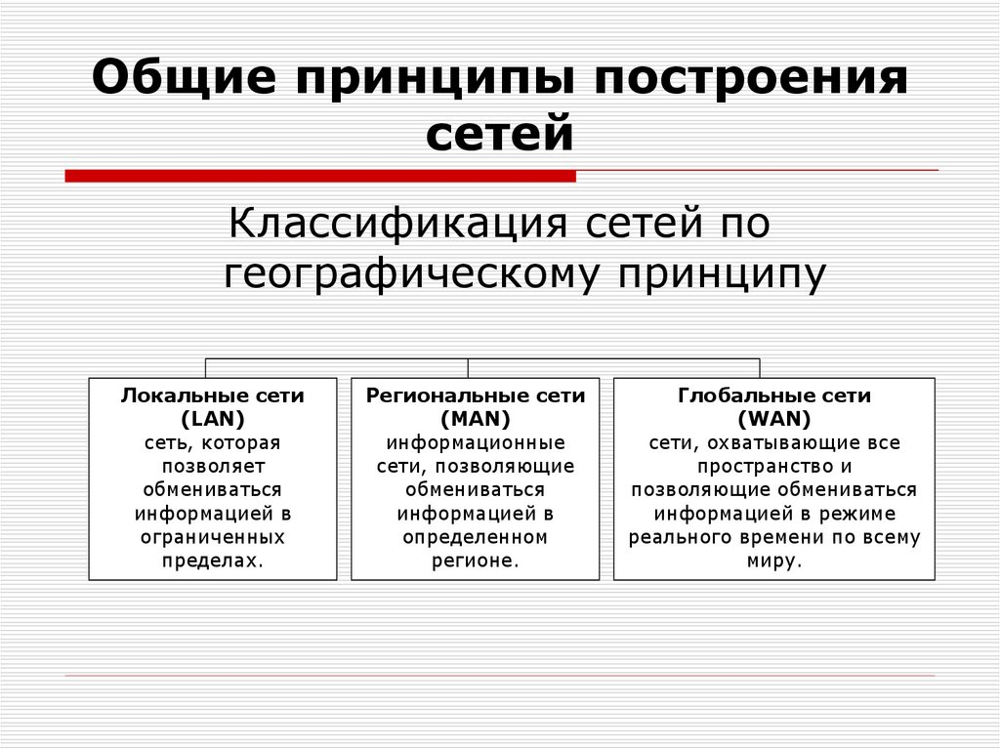

Принципы функциональной организации компьютерных сетей
Основные принципы
Основные принципы, позволяющие эффективно организовать сеть:
Измеримость (scalability)
Изолированность (isolation)
Устойчивость (resilience)

Назад на главную страницу